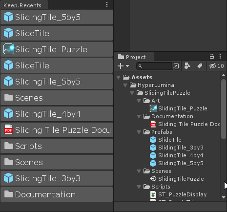
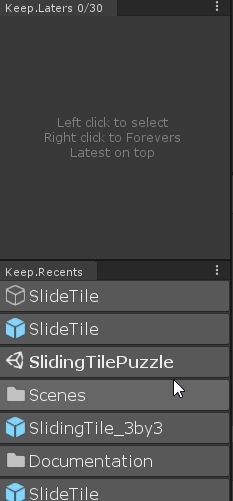
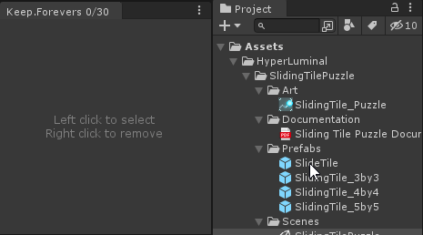
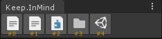
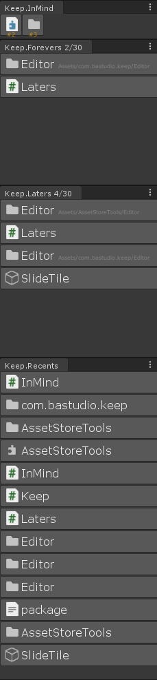

Unity 插件：Keep
Keep 是一套輔助插件，起因是因為我接手負責一個巨大的專案，檔案繁多、安排的方式又很不得我意，一直花很多時間在翻 Project 視窗，Asset Store 上的免費插件又不能滿足挑剔的我，所以決定自己寫一個簡單的點選歷史紀錄面板…一發不可收拾，又寫了好幾個面板，變成了一套完整的工具。
自己邊使用邊開發了大概一個月，整體來說非常滿意，覺得好看又好用簡直回不去了，所以決定認真整理一下發布出來。
讓 Keep 改變你的習慣
我們可以將 Asset 以使用頻率/週期做一個分類：
- 剛才用到的 -> 「我剛才開的那個在哪？」
- 等一下/今天會用到的 -> 「要先做別的事，晚點再來改…」
- 在同一個專案中，今後總會用到的 -> 「每次都在找這個 Asset 有點煩啊？」
Keep 提供 4 個工具面板來幫助你快速存取物件，意圖成為你不可或缺的夥伴，Recents 紀錄你剛剛點選了什麼，Laters 讓你暫存之後會用到的東西，Forevers 讓你永久保存常用的 Asset，再附帶一個 InMind——撥號鍵盤型的 Forevers，更小的面板上保存更多快速存取選項。
Keep 會幫助你習慣將 Asset 依據重要程度、使用頻繁程度分級，漸漸地，在 Project 視窗裡東翻西找的時間將會大幅減少。
Keep.Recents

- Recents 是你的點選歷史，最後點選的物件會排在最上面（FIFO）。
- Recents 會保存最近的 30 筆選項，但不提供捲動功能、不鼓勵你去回想「我剛剛點了什麼」，如果你真的有需要，你可以拉長介面。
- Recents 經過優化，沒有顯示的選項不會繪製。
- 右鍵選項，可以將物件保存到 Laters；若 Laters 未開啟，會自動開啟 Laters；若 Laters 未開啟，但 Forevers 已開啟的情況，會保存到 Forevers。
Keep.Laters

- Laters 代表「你之後會用到的東西」，和 Recents 一樣是 FIFO 清單，隨著你的工作進行，不再需要的東西自然而然會消失在清單底部。
- Laters 接收從 Recents「升級」保存的物件，也接受直接拖拉新增物件。
- Laters 比 Recents 優化更佳，捲動視野外的選項幾乎不佔用繪製效能。
- 右鍵選項可以將物件保存到 Forevers。
Keep.Forevers

- Forevers 用來保存那些只要你還在做同一個專案，就總是會存取的東西，比如說遊戲的啟動場景、主選單 Prefab。Forevers 的選項在你右鍵移除之前會永遠存在。
- Forevers 接受從 Laters 或 Recents「升級」保存的物件，也接受直接拖拉新增物件。
- Forevers 和 Laters 使用了相等的優化，捲動視野外的選項幾乎不佔用繪製效能。
Keep.InMind

- InMind 跟 Forevers 具有相同的功能，但是以 Dialpad 形式呈現，節省你珍貴的螢幕空間（real-e$tate）。相對的，InMind 要求你對物件的熟悉度更高，不需要多想就記得各個按鈕分別是什麼物件。
- InMind 對每個新增的物件提供 UID 標記，直到你使用視窗選單中 FullReset 功能之前，每個按鈕都會有一個獨一無二的編號，幫助你記憶。
- 即使一時記不住也沒關係，在滑鼠指向按鈕時，視窗下方會顯示物件名稱。
推薦的面板排列
透過將四個面板排成一條線，由低至高對於物件的重要性一目了然，右鍵時升級（escalate）的概念也更明確。 
Keep 目前在 Asset Store ($4.99) 販售中！（審核）
其實我只是沒賣過東西想感受一下，才發現現在 Asset Store 有最低 4.99 售價的限制… Unity 不讓我便宜賣，我能有什麼辦法（攤手